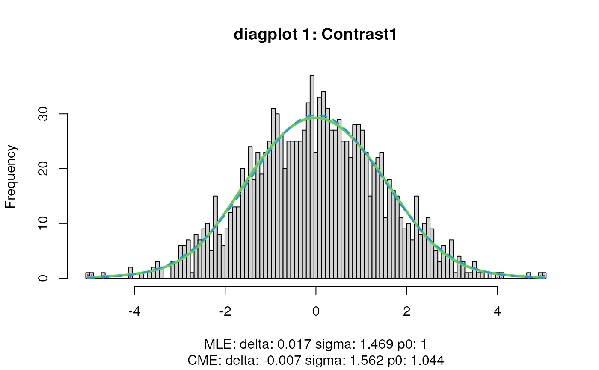
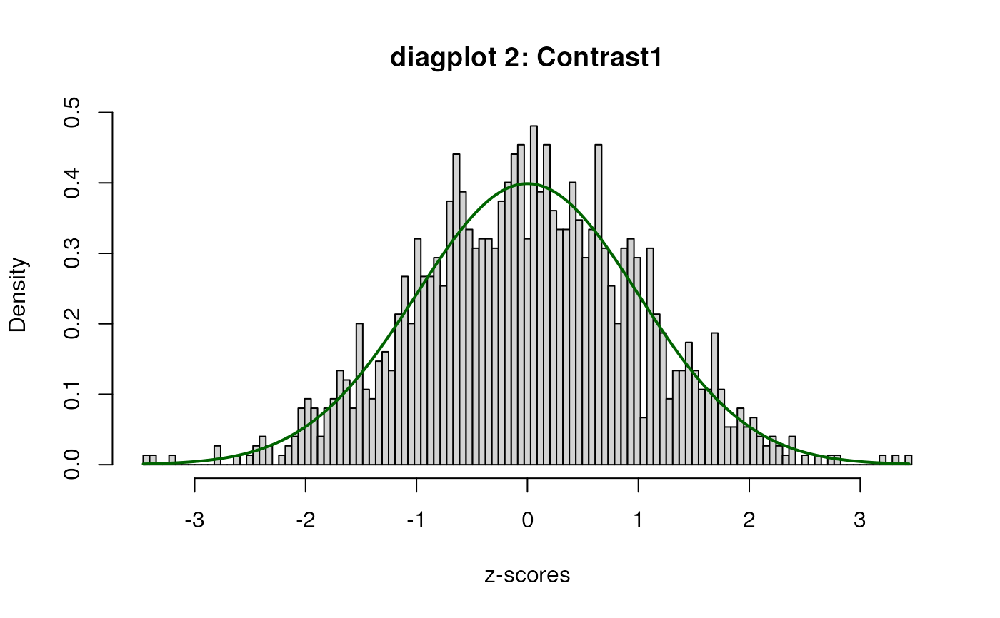
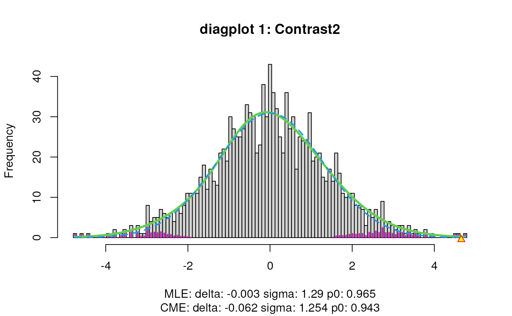
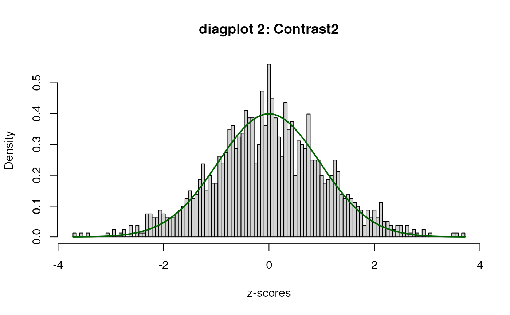

R/testDTU.R
testDTU.RdFunction to test for differential transcript usage (DTU)
testDTU(
object,
contrasts,
diagplot1 = TRUE,
diagplot2 = TRUE,
sort = FALSE,
forceEmpirical = FALSE
)A `SummarizedExperiment` instance containing a list of objects of the `StatModel` class as obtained by the `fitDTU` function of the `satuRn` package.
`numeric` matrix specifying one or more contrasts of the linear model coefficients to be tested. The rownames of the matrix should be equal to the names of parameters of the model that are involved in the contrast. The column names of the matrix will be used to construct names to store the results in the rowData of the SummarizedExperiment.
`boolean(1)` Logical, defaults to TRUE. If set to TRUE, a plot of the histogram of the z-scores (computed from p-values) is displayed using the locfdr function of the `locfdr` package. The blue dashed curve is fitted to the mid 50 to originate from null transcripts, thus representing the estimated empirical null component densities. The maximum likelihood estimates (MLE) and central matching estimates (CME) of this estimated empirical null distribution are given below the plot. If the values for delta and sigma deviate from 0 and 1 respectively, the downstream inference will be influenced by the empirical adjustment implemented in satuRn.
`boolean(1)` Logical, defaults to TRUE. If set to TRUE, a plot of the histogram of the "empirically adjusted" test statistics and the standard normal distribution will be displayed. Ideally, the majority (mid portion) of the adjusted test statistics should follow the standard normal.
`boolean(1)` Logical, defaults to FALSE. If set to TRUE, the output of the topTable test function is sorted according to the empirical p-values.
`boolean(1)` Logical, defaults to FALSE. If there are less than 500 features in a particular contrast, satuRn will by default not perform its empirical correction of p-values and only output raw p-values. By setting this parmater to TRUE, this behaviour can be overwritten and satuRn will try to perform the empirical correction anyway. Use with caution! Carefully inspect the two diagplots to assess if the correction is reasonable.
An updated `SummarizedExperiment` that contains the `Dataframes` that display the significance of DTU for each transcript in each contrast of interest.
data(sumExp_example, package = "satuRn")
library(SummarizedExperiment)
sumExp <- fitDTU(
object = sumExp_example,
formula = ~ 0 + group,
parallel = FALSE,
BPPARAM = BiocParallel::bpparam(),
verbose = TRUE
)
group <- as.factor(colData(sumExp)$group)
design <- model.matrix(~ 0 + group)
colnames(design) <- levels(group)
L <- matrix(0, ncol = 2, nrow = ncol(design))
rownames(L) <- colnames(design)
colnames(L) <- c("Contrast1", "Contrast2")
L[c("VISp.L5_IT_VISp_Hsd11b1_Endou",
"ALM.L5_IT_ALM_Tnc"), 1] <- c(1, -1)
L[c("VISp.L5_IT_VISp_Hsd11b1_Endou",
"ALM.L5_IT_ALM_Tmem163_Dmrtb1"), 2] <- c(1, -1)
sumExp <- testDTU(object = sumExp,
contrasts = L,
diagplot1 = FALSE,
diagplot2 = FALSE,
sort = FALSE,
forceEmpirical = FALSE)



